Engineering projects spanning aerospace, embedded systems,
control, computer vision, and computational engineering, while starting to explore ML
and AI.
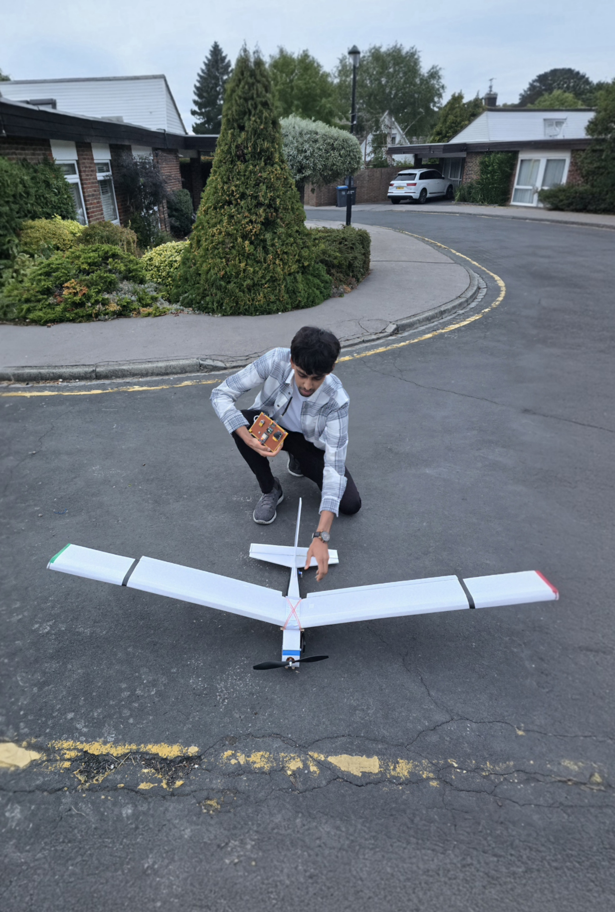
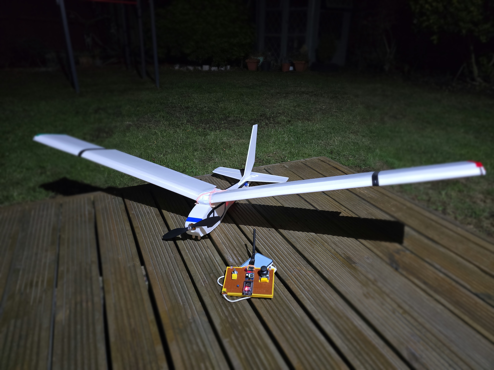
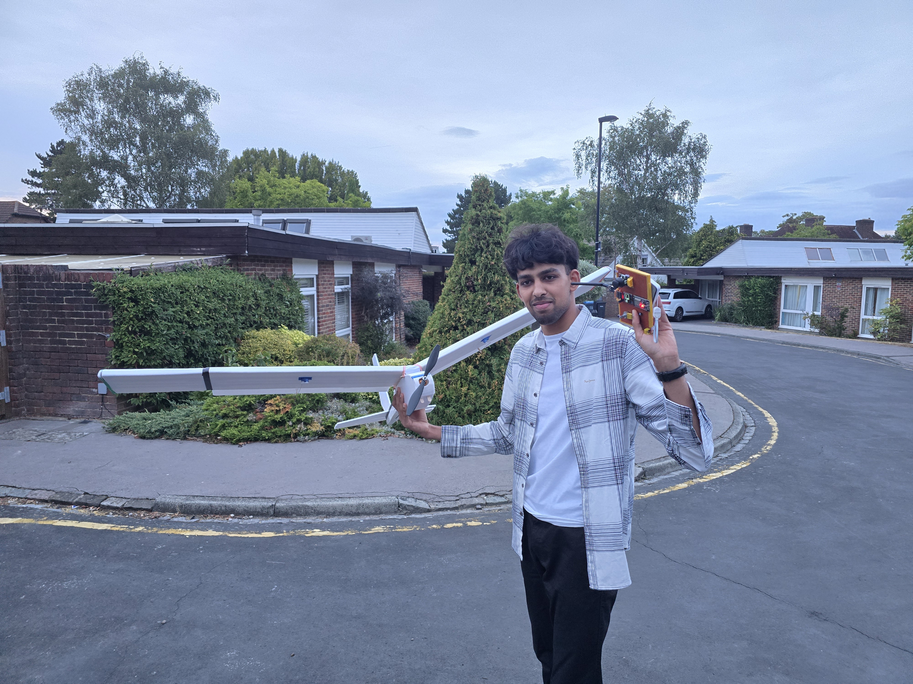
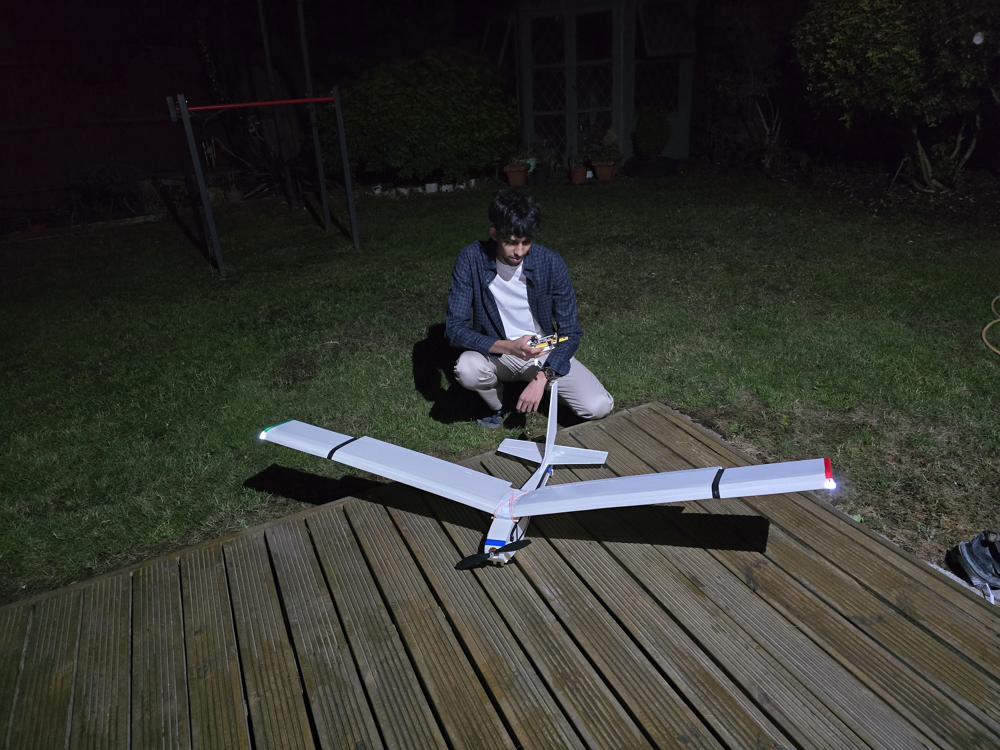
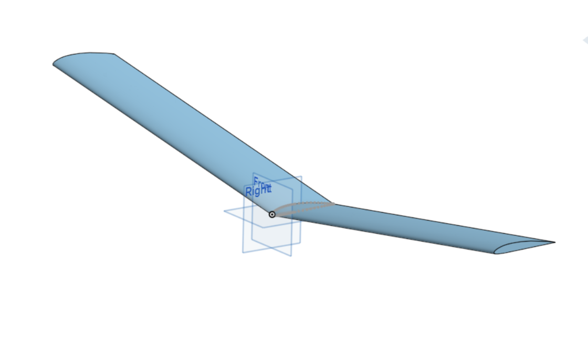
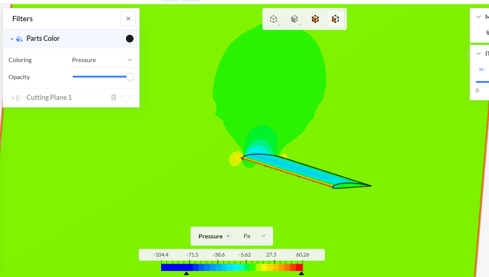
1 / 3
AUG 2026 - SEPT 2026 (AGE 18)
Building a Fixed Wing Electric R/C Aircraft
I designed and built an electric R/C aircraft to gain practical experience
in aerospace engineering, particularly CAD, CFD and aerodynamics. The project
was intended to take me through the complete engineering process from concept
to flight, while understanding the challenges of building an electric aircraft
and the constraints of flight, alongside developing my skills in electronics,
programming, testing and problem-solving. I entered this into element14's
"Show and Tell" competition, in which I was one of the 25 selected winners.
MechLab was created as a simple computational physics program, aimed as a
teaching and learning tool for students at a secondary school or undergraduate
level. It simulates basic dynamic systems encounterd by physics students at
these stages of education, such as projectiles, collisions, harmonic oscillators
and more.
Platform and Solution Structure
The solution was made using Python and OOP (Object Oriented Programming). Details
about the solution structure can be seen in the full documentation. This project was
used to learn and develop my skills in computational modelling, as well as using maintanable
programming principles. In hindsight,
using C++ would have been smarter given the project's goals, and the OOP and performance
benefits that come with the language.
Skills
Programming - PythonComputational Modelling of Dynamic Systems
Smart TRACS - Samsung Solve for Tomorrow 2024/2025 UK Competition
A computer vision based traffic management system I worked on for the competition.
I used IR and echolocation along with computer vision to optimise traffic
flow on a basic 2-way intersection. My project ranked among the top 50 submissions nationally, for which I was invited to
phase 2 of the competition.
Skills
Computer Vision - OpenMVProgramming - C++ and Python
Unfortunately, documentation of this project was lost :(
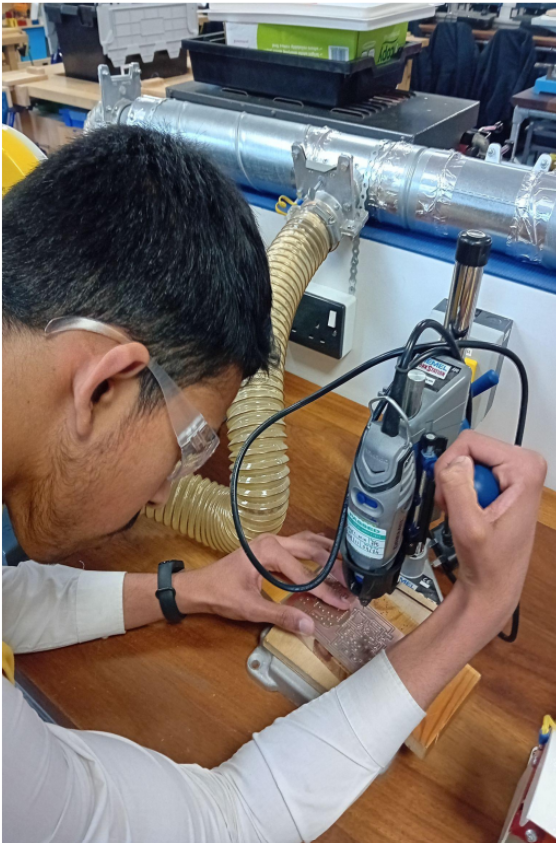
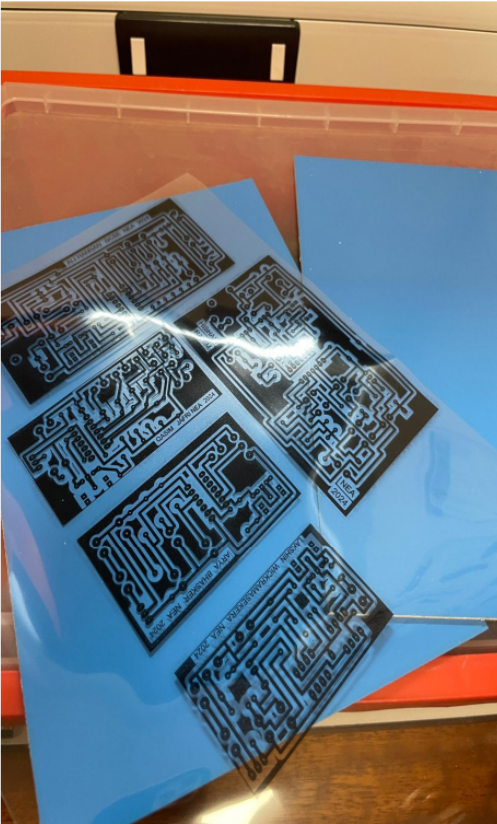
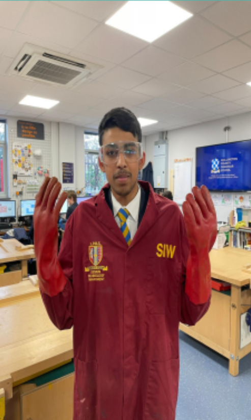
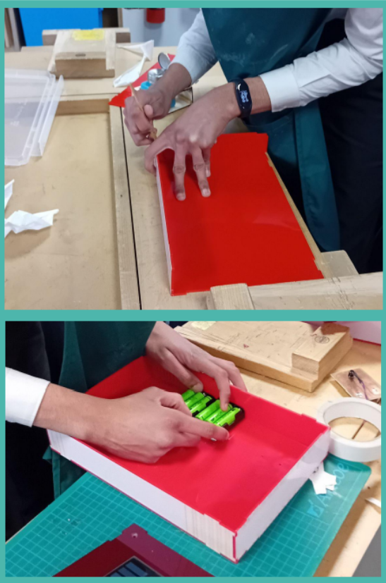
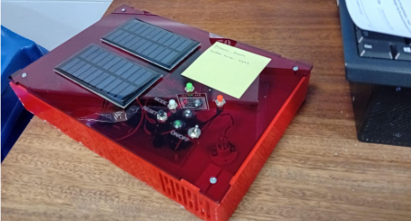
1 / 3
SEPT 2023 - MAY 2024 (AGE 15/16)
Building a Solar Powered Closed-Loop Thermostat
This project was completed as a part of my GCSE Design and Technology NEA project.
It involves using a simple closed-loop control circuit alongside a simple GENIE PIC
Microcontroller to act as a thermostat. A fan and heating element were used to control
the ambient temperature using the current state of the room. This was my first full start to
finish project, and my first attempt at more advanced techniques such as pcb etching, laser
cutting and electronics
Platform and Solution Structure
The solution was developed on the GENIE series of microcontrollers, using flowchart
programming in Circuit Wizard, and 2D Design to design the chasis.
My interest for aerospace, specifically aircraft, goes back many years. After I had
built a basic foundation in electronics and microcontrollers, at the age of 14, I decided
to try and build a basic R/C plane. It only flew briefly, but was a huge success for me,
at that age, and came with many learnings I applied to all my future projects.
Platform and Solution Structure
This project used the Arduino platform, the Arduino Uno for the transmitter, and
the Arduino Nano for the reciever, with the nRF24l01 being the radio communication
platform.
Skills
Programming - C++Basic Radio Control
This project had no documentation
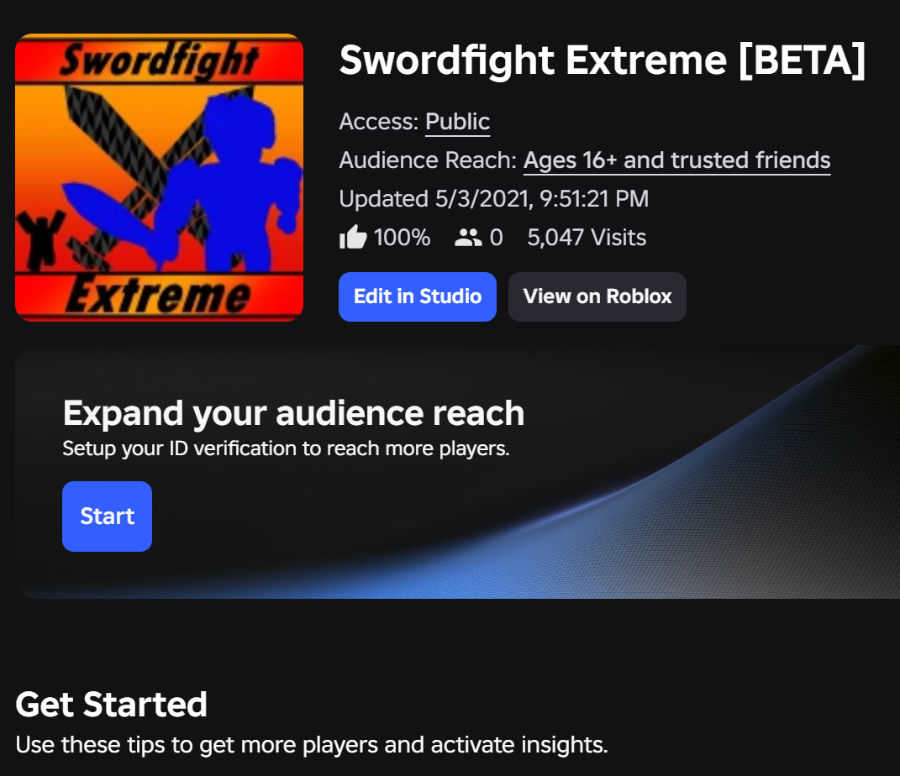
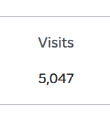
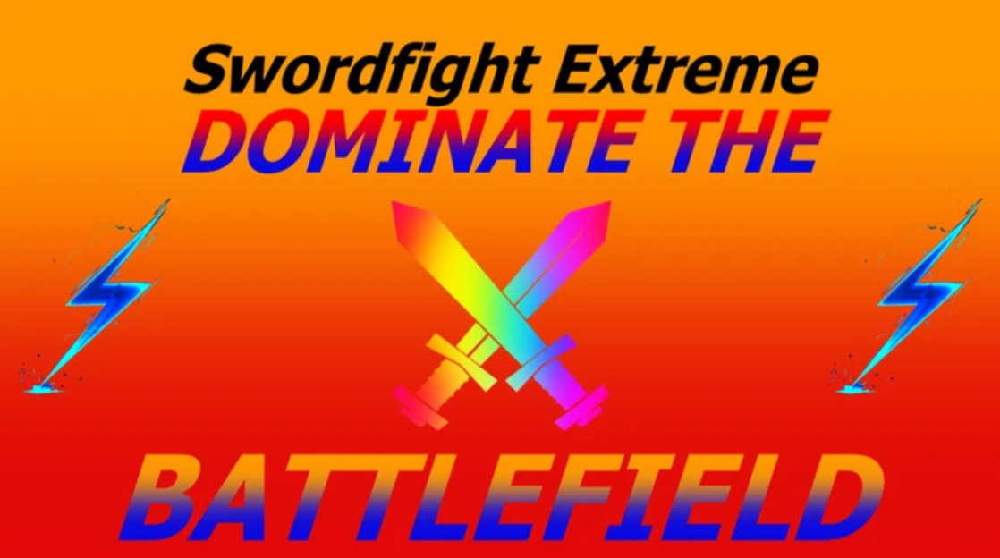
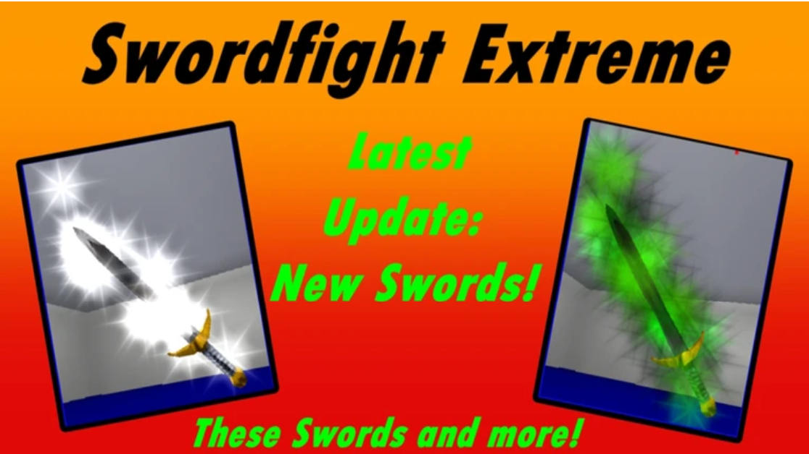
1 / 3
NOV 2020 - JUN 2021 (AGE 11/12)
Swordfight Extreme - A Roblox Game Development Project
This is my first big project (that remains in memory to this day). I started and
led this project with a group of friends, with the aim of creating a startup company around
the game and its concept. Though, looking back, it was nowhere near polished or refined,
I am still extremely proud of the progress I've made since. The game saw some small success,
a peak of around 5100 visitors.
Platform and Solution Structure
The game was developed on Roblox Studio, and programmed in Lua.